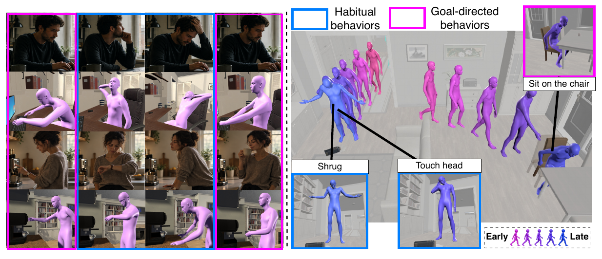
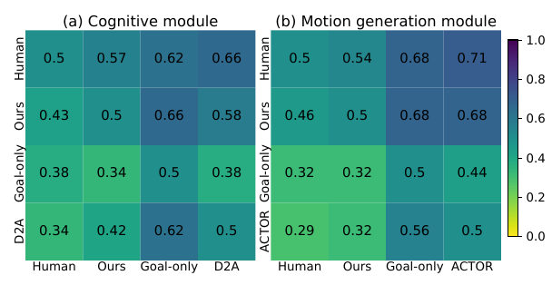

Generative Embodied Multiple Behavior Control Systems for Human-like Agents
1Bristol Digital Futures Institute, University of Bristol2University of Copenhagen 3Clemson University
* Equal contribution

Abstract
Building autonomous agents that reproduce human behavior in realistic 3D environments has been a longstanding objective in AI. Cognitive neuroscience commonly believes that human behaviors are controlled by multiple control systems including goal-directed and habitual. However, existing human-like agent frameworks primarily focus on goal-directed system and habitual system is largely overlooked. In this paper, we address this gap by proposing GEMS, a Generative Embodied Multiple Behavior Control System that jointly models goal-directed and habitual behaviors for generating believable human-like behavior. GEMS employs a cognitive module to generate natural language behaviors and a motion generation module to construct them in 3D environment. The cognitive module comprises a Habitual Controller that retrieves habitual actions from habit memory in response to environmental stimuli, a Goal-directed Controller that proposes goal-directed actions for current goal, and an Arbiter that governs their influence and selects the final action, supporting diverse and naturalistic behavior patterns generation. To construct these behaviors, the motion generation module adopts a Text-to-Motion model to generate versatile and expressive 3D human–scene interactions without relying on predefined actions. Extensive evaluations, human and ablation studies demonstrate that human-likeness performance is substantially improved by GEMS. The efficacy of GEMS indicates the benefits of leveraging habitual behavior and multiple behavior control system coordination for believable embodied human-like agents design. The code is available at this link.
Stay tuned for our promotional video.
Demos of GEMS: Long-Horizon Interaction
Click the scene to explore · W/A/S/D to move · Drag to look · Q/E to move down/up · Shift to move faster
Qualitative Comparisons
Human Study
A total of 94 participants took part in blind pairwise evaluations of language behavior sequences and motion videos. Participants selected the behavior that appeared more human-like. GEMS received higher preference rates than Goal-only, and was selected over real human references in 43.4% of cognitive comparisons and 46.3% of motion comparisons.

Quantitative Results
Table 1: Quantitative comparison with previous human-like agent frameworks on controlled daily-life goals with the same initialization. Mean denotes the average of Nat., Coh., and PA. Besides, Qual. and Act. have a maximum score of 5. The best results are highlighted in bold.
| Method | Cognitive module | Motion generation module | Action type | |||||||
|---|---|---|---|---|---|---|---|---|---|---|
| Nat. ↑ | Coh. ↑ | PA ↑ | Mean. ↑ | SSR ↑ | GSR ↑ | DTG ↓ | Qual. ↑ | Act. ↑ | ||
| X-VirtualHome (Leng et al., 2026) | 42.26 | 83.81 | 77.52 | 67.86 | 56.67 | 53.33 | 19.95 | 1.27 | 2.86 | Atomic |
| AGA (Yu et al., 2024) | 56.98 | 53.74 | 69.17 | 59.96 | 51.33 | 26.67 | 19.96 | 1.21 | 1.68 | Atomic |
| D2A (Wang et al., 2025) | 63.74 | 76.90 | 75.43 | 72.02 | – | – | – | – | – | – |
| ASVO (Lin et al., 2026) | 42.01 | 46.83 | 27.11 | 38.65 | – | – | – | – | – | – |
| ACTOR (Liang et al., 2025) | 47.77 | 86.18 | 77.62 | 70.52 | 59.79 | 46.67 | 98.42 | 3.75 | 3.59 | Motion clips |
| ACTOR† (Liang et al., 2025) | 52.79 | 85.85 | 78.27 | 72.30 | 62.67 | 48.67 | 94.74 | 3.66 | 3.69 | Motion clips |
| GEMS (ours) | 90.31 | 89.96 | 84.35 | 88.21 | 86.24 | 79.33 | 22.48 | 4.12 | 4.23 | Generative |
Future Work
We plan to deploy GEMS at the Reality Emulator of the Bristol Digital Futures Institute (BDFI), enabling real-time interaction between users and GEMS agents in an immersive environment.
BibTeX
@article{bao2026gems,
title={Generative Embodied Multiple Behavior Control Systems for Human-like Agents},
author={Bao, Chongyu and Yang, Haokai and Wang, Yuhan and An, Zhaochong and Liu, Kunpeng and Liu, Xiaolan},
journal={arXiv preprint arXiv:2609.22691},
year={2026},
url={https://arxiv.org/abs/2609.22691v2}
}